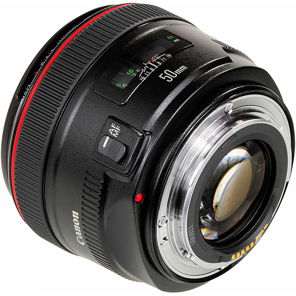
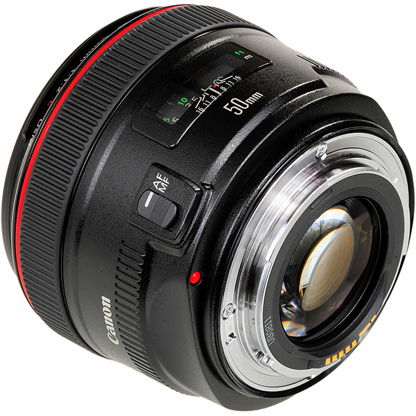

описание | характеристики | отзывы

описание | характеристики | отзывы
Компания Canon объявляет о выпуске нового объектива серии L с высочайшими характеристиками — EF 50mm f/1.2L USM. Имея самую широкую диафрагму среди всех выпускаемых Canon объективов серии EF, новая модель обеспечивает исключительно точный контроль глубины резкости, а также отличную производительность в условиях низкой освещённости. Ожидается, что новый объектив будет пользоваться успехом у фотографов, занимающихся съёмкой свадебных мероприятий и портретной съёмкой, а также у профессиональных фотокорреспондентов. Оснащённая передовыми технологиями автофокусировки Canon, модель EF 50mm f/1.2L USM укрепляет репутацию серии EF как объективов, обеспечивающих высокочувствительную и высокоскоростную автофокусировку. Кроме того, круглая диафрагма гарантирует получение эффектного размытого фона.
Виктор: Шикарно рисует, размывая фон в мягкие облачка! Такие стекла, что называется, могут фотографировать воздух. Совершенно благородный объектив, однозначно стоит своих денег, прекрасно работает на кропе.
Павел: Объектив уникальный, после него совершенно не удовлетворяет все что темнее 2.8 и очень не хочется покупать зумы вообще.
Артур: Поскольку достойно альтернативы за эти деньги не нашел, покупкой в принципе не разочаровался. Но про недостатки лучше знать заранее, чтобы потом не было мучительно больно.
Наверх